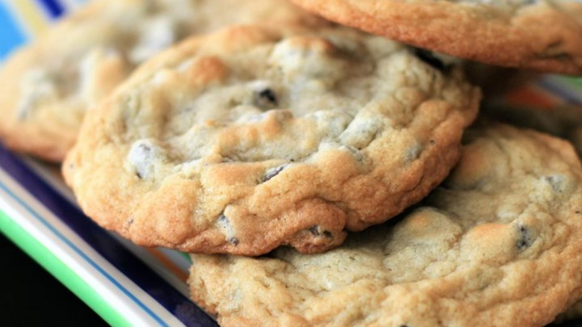

Prep: 20 m
Cook: 10 m
Ready In: 1 h
Servings: 24
Ingredients
2 teaspoons vanilla extract
2 cups semisweet chocolate chips
Directions
- Preheat oven to 350 degrees F (175 degrees C).
- Cream together the butter, white sugar, and brown sugar until smooth.
- Beat in the eggs one at a time, then stir in the vanilla.
- Dissolve baking soda in hot water. Add to batter along with salt.
- Stir in flour, chocolate chips, and nuts.
- Drop by large spoonfuls onto ungreased pans.
- Bake for about 10 minutes in the preheated oven, or until edges are nicely browned.